PRO Commandes des joysticks
Le bouton Commandes… de la barre d'outils ouvre une fenêtre qui répond à une question simple : « ce bouton, il fait quoi dans ce module ? ». Vous choisissez un module de DCS, vous appuyez sur un bouton de votre joystick, de votre manette des gaz ou d'un panneau (ou vous bougez un axe, un chapeau), et la commande DCS correspondante s'affiche aussitôt. La fenêtre reste ouverte à côté de l'application ; on peut la garder sur un second écran.
La fenêtre lit les fichiers de commandes de DCS, l'état des joysticks (comme DCS lui-même, par DirectInput) et, pour les périphériques Virpil, les profils enregistrés par VPC Configurator. Elle n'écrit ni dans DCS ni dans les périphériques, et n'interroge jamais leur firmware. Seules deux actions écrivent, et toujours à votre demande : la reprise d'anciens réglages (avec sauvegarde) et l'export vers la kneeboard.
Consulter les commandes d'un module
- Choisissez le module dans la liste du haut (un module jamais configuré dans DCS est marqué « non configuré » : ses commandes par défaut s'affichent quand même). Le dernier module choisi est retenu pour la fois suivante.
- Appuyez sur un bouton, poussez un chapeau ou bougez franchement un axe : le panneau Dernière action affiche le périphérique, l'entrée (Bouton 12, Chapeau 1 ↑, Axe RZ…) et, en grand, la commande DCS.
- Les autres commandes de la même entrée, avec des modificateurs DCS, sont listées dessous (« Avec RShift : … »). Si vous tenez un modificateur (touche du clavier ou bouton de joystick déclaré comme modificateur dans DCS), c'est la commande correspondante qui s'affiche en grand.
- La liste de gauche montre les périphériques branchés avec leur nombre de commandes ; choisir l'un d'eux limite le tableau à ses commandes. La case Périphériques débranchés ajoute ceux qui ont des réglages dans le module sans être branchés.
- La case Avec la couche UI ajoute les commandes de la couche commune de DCS (UI Layer), actives dans tous les modules.
- Le champ de recherche filtre le tableau sur le nom de la commande, sa catégorie ou l'entrée (« Master Arm », « Chapeau »…).
- Quand on appuie sur un bouton en même temps qu'on bouge un axe (manette des gaz), le bouton reste affiché : les mouvements d'axe sont ignorés pendant 1,5 seconde après un appui.

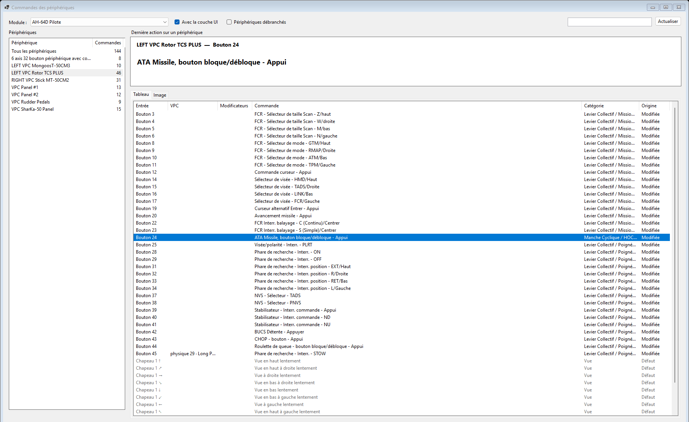
D'où viennent les commandes
Comme DCS, l'application part du profil par défaut du module (dans le dossier d'installation de
DCS) puis applique vos modifications (fichiers .diff.lua de
Saved Games\DCS\Config\Input). Les noms s'affichent dans la langue de DCS. Dans le tableau :
| Origine | Affichage | Signification |
|---|---|---|
| Modifiée | texte noir | Commande ajoutée ou changée par vous dans DCS. |
| Défaut | texte gris | Commande du profil par défaut du module, que vous n'avez pas changée. |
| Conflit | texte rouge | DCS affiche cette commande en rouge : une de ses combinaisons par défaut est reprise par une autre commande dans vos réglages. |
Périphériques Virpil
Pour un périphérique Virpil, la colonne VPC et le panneau Dernière action indiquent ce que VPC Configurator fait du bouton quand ce n'est pas un bouton ordinaire : le bouton physique qui le produit, sa couche de shift (« physique 49 · Shift 1 »), un bouton produit par un axe (« axe rZ zone 1 »), un encodeur ou un mode Click on Push, ainsi que les autres boutons logiques du même bouton physique (autres couches).
- Ces informations viennent des profils que VPC Configurator enregistre dans
%LOCALAPPDATA%\VIRPIL\PROFILES(le plus récent de chaque périphérique). Le bouton Dossier VPC… permet d'en choisir un autre. - Le profil lu est le dernier enregistré par VPC Configurator : si vous avez modifié le périphérique sans enregistrer, les indications peuvent différer de ce qu'il fait réellement.
Réglages restés sous un ancien identifiant
DCS reconnaît un périphérique par son nom et par un identifiant attribué par Windows. Il arrive que Windows en attribue un nouveau (changement de port USB, mise à jour du firmware, réinstallation) : DCS repart alors d'un réglage vierge et vos anciens réglages restent de côté, sans être effacés. La fenêtre le signale par un ⚠ devant le périphérique et une explication sous la liste.
- Choisissez le périphérique marqué ⚠, puis cliquez Reprendre les anciens réglages….
- La liste montre, pour chaque module concerné, le nombre de commandes modifiées sous l'ancien identifiant et sous l'identifiant actuel. Décochez les modules à laisser tels quels.
- Cliquez Reprendre (DCS doit être fermé). Pour chaque module coché, l'ancien fichier de réglages est recopié sous l'identifiant actuel (l'ancien fichier reste en place) et les modificateurs définis sur ce périphérique sont mis à jour.
Avant toute modification, les fichiers remplacés sont copiés dans
%LOCALAPPDATA%\VisualPosiScreenPRO\Sauvegardes\Commandes DCS\<date>, avec un fichier
LISEZMOI.txt qui liste ce qui a été fait et explique comment revenir en arrière.
Annuler une reprise : choisissez le périphérique, puis Annuler une reprise… (le bouton apparaît dès qu'une reprise de ce périphérique peut être annulée). Choisissez la reprise, la plus récente en premier ; la fenêtre liste les fichiers qui seront supprimés (créés par la reprise) ou rétablis (remplacés ou modifiés par elle), et signale ceux que vous avez modifiés dans DCS depuis : ces changements seraient annulés aussi. DCS doit être fermé. L'état d'avant l'annulation est d'abord sauvegardé dans un nouveau dossier « … annulation de … » : l'annulation peut elle-même être défaite.
L'image du périphérique
L'onglet Image (à côté de l'onglet Tableau) montre le périphérique en image, avec le texte des commandes dans des cases. L'application ne fournit aucune image : vous importez la vôtre, une fois par modèle de périphérique, puis vous indiquez quelle case correspond à quelle commande. Ce travail sert ensuite pour tous les modules : les cases affichent automatiquement les commandes du module choisi.
Virpil publie pour la plupart de ses périphériques une image avec une case vide numérotée par bouton, dans la rubrique Button Mapping de son site d'assistance. Pour les autres, des gabarits de la communauté existent (à enregistrer en PNG ou JPG). Une simple photo du périphérique convient aussi : les gabarits du menu Placer dessinent alors leurs propres cases.
Mettre en place l'image d'un périphérique
La mise en place se fait en cinq étapes, dans cet ordre.
Étape 1 — Importer l'image
- Ouvrez l'onglet Image et choisissez le périphérique dans la liste de gauche (ou appuyez sur un de ses boutons : son image s'affiche).
- Cliquez Image… et choisissez le fichier PNG ou JPG (BMP accepté). L'image est copiée dans les données de l'application ; le fichier d'origine peut être déplacé ensuite.

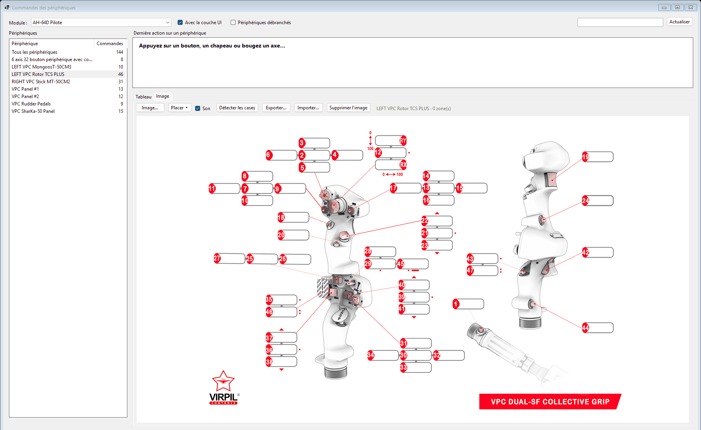
Étape 2 — Choisir le nombre de shifts (avant de poser des cases)
Le nombre de couches de shift est lu au moment où un gabarit « Bouton avec shift » est posé : il fixe le nombre de lignes de ce gabarit. Le changer ensuite ne modifie pas les gabarits déjà posés (il faudrait les supprimer et les reposer). Réglez-le donc en premier, d'après la configuration de votre périphérique dans VPC Configurator (couches SHFT1 à SHFT5).
- Cliquez Placer ▾ puis Shifts : nombre et couleurs….
- Indiquez le nombre de couches de shift du périphérique (1 à 5). Il vaut pour ce périphérique seulement.
- Choisissez si vous le souhaitez la couleur de chaque couche (clic sur la couleur). Les couleurs sont communes à tous les périphériques : la couche 1 a partout la même couleur.

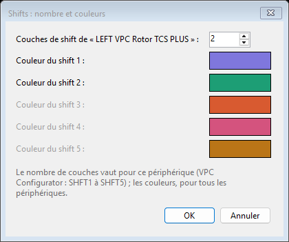
Étape 3 — Placer les cases
Deux façons, que l'on peut combiner :
- Détecter les cases, pour une image Virpil qui a déjà une case vide par bouton : toutes les cases de l'image sont trouvées d'un coup et deviennent des cases en attente, la première allumée en orange.
- Placer ▾, pour poser des gabarits (bouton, interrupteur, encodeur, axe, chapeau chinois), sur une photo ou à côté des cases existantes.

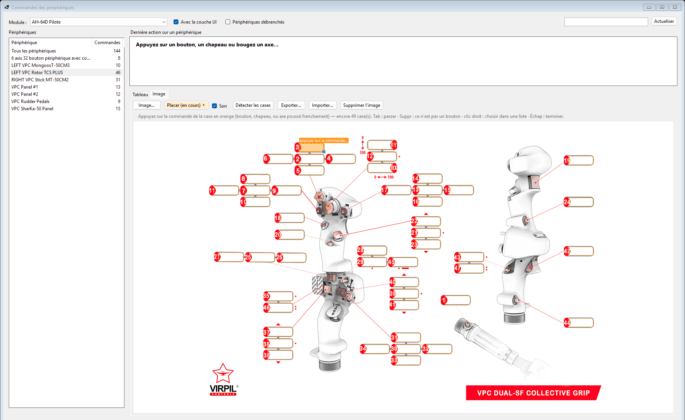

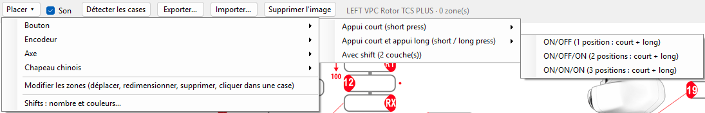
Poser un gabarit
- Dans Placer ▾, choisissez la famille puis le gabarit :
- Bouton :
- Appui court : ON/OFF (1 case), ON/OFF/ON (2 cases, haut et bas) ou ON/ON/ON (3 cases, haut, milieu, bas) ;
- Appui court et appui long : les mêmes, avec pour chaque position une ligne d'appui court et, collée dessous, une ligne d'appui long (comme les cases d'appui long des images Virpil). Pour un Virpil dont le profil VPC est lu, l'appui court remplit l'appui long d'après VPC ; sinon, faites un appui long sur la ligne suivante ;
- Avec shift : une ligne sans shift plus une ligne par couche de shift (voir l'étape 2), chacune dans la couleur de sa couche ; remplies d'après VPC, ou par un appui avec chaque shift à son tour ;
- Encodeur : Gauche / Droite (2 cases) ou Gauche / Appui / Droite (3 cases) ;
- Axe : 1 axe, 2 axes (haut-bas, gauche-droite), 1 axe avec boutons en zone (l'axe, puis les boutons à 0, 50 et 100 % de sa course, comme les zones « Axis to Button » de VPC Configurator) ou 2 axes avec boutons en butée (les deux axes, puis les boutons en butée haut, droite, bas, gauche) ;
- Chapeau chinois : 4 directions (croix) ou 8 directions (carré de 3×3), avec ou sans bouton central.
- Bouton :
- Le gabarit apparaît en transparence et suit la souris. La molette règle la taille de ses cases (au départ, celle des cases de l'image).
- Pour le poser :
- clic gauche : le gabarit est posé là, sans trait ;
- clic maintenu sur le bouton de la photo, puis glisser jusqu'à l'endroit voulu : un trait part du bouton et suit le gabarit ; au relâchement, le gabarit est posé et relié à son bouton, comme les traits des images Virpil.
- Le gabarit reste actif : on peut en poser plusieurs d'affilée. Clic droit pour choisir un autre gabarit, Échap pour arrêter de poser (pendant un glisser, Échap abandonne seulement le trait).


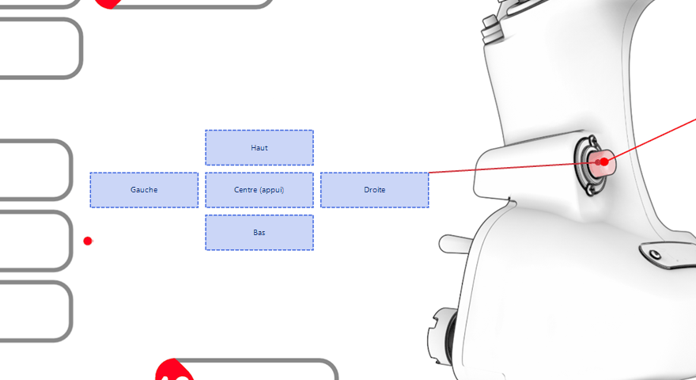
Chaque case d'un gabarit montre seulement sa propre commande. Une case détectée ou tracée à la main montre, pour un Virpil, tout le bouton physique : couches de shift et appui long.
Étape 4 — Associer chaque case à sa commande
- La case en attente est allumée en orange ; pour une case de gabarit, son rôle est affiché au-dessus (« appuyez : Haut », « Gauche (rotation) », « Shift 1 »…) et rappelé sous les boutons.
- Appuyez sur la commande correspondante du périphérique (bouton, chapeau ; pour un axe, poussez-le franchement, sur au moins un tiers de sa course). L'application écoute 1,5 seconde après la première commande reçue (« Reçu : … » sous les boutons) et retient la dernière : un appui long ou un double appui configuré dans VPC Configurator, qui envoie d'abord un autre bouton, est ainsi bien associé.
- Un « ding-dong » discret confirme l'association (case Son pour le couper) et la
case suivante s'allume. Continuez jusqu'à la dernière.
- Tab : passer cette case (elle sera proposée de nouveau à la fin du tour) ;
- Suppr : retirer une case qui n'est pas une commande (légende « OFF », couleurs des voyants…) ;
- Échap : terminer. Les cases restées sans commande sont retirées.

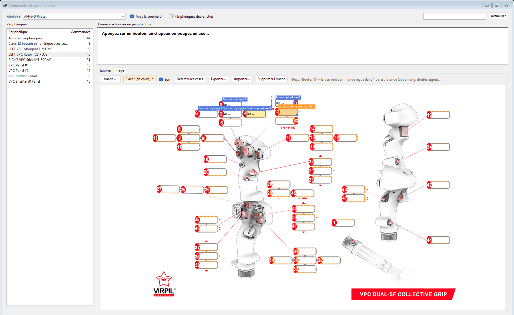

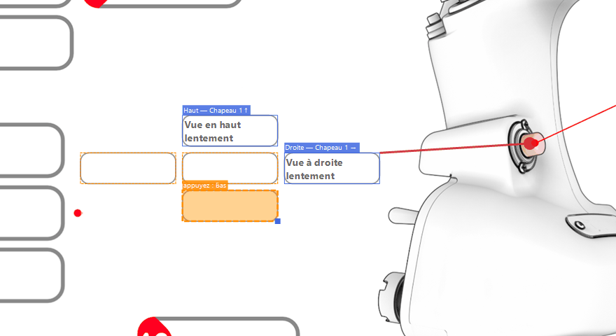
Choisir la commande dans une liste plutôt qu'en appuyant (périphérique débranché, bouton difficile à atteindre…) : pendant le placement, sans gabarit qui suit la souris, clic droit sur la case.
- Axe : les axes que le périphérique déclare (X, Y, Z, RX, RY, RZ, curseurs) ;
- Bouton : tous les boutons du périphérique, rangés par vingtaine (« Boutons 1 à 20 », « 21 à 40 »… jusqu'à 256). Pour chacun, Appui court (Short Press) ou Appui long (Long Press) : une même case peut porter le bouton de l'appui court et celui de l'appui long, affiché « Long Press : … ». Pour un Virpil, le mode lu dans VPC Configurator est indiqué à côté du bouton (par exemple « physique 43 · Long Press ») ;
- Chapeau : les huit directions de chaque chapeau, si le périphérique en a ;
- Tracer un trait vers le bouton… (puis un clic sur le bouton de la photo), ou Retirer le trait.
Une coche marque l'association actuelle de la case ; « — autre case » signale une commande déjà placée ailleurs sur l'image.

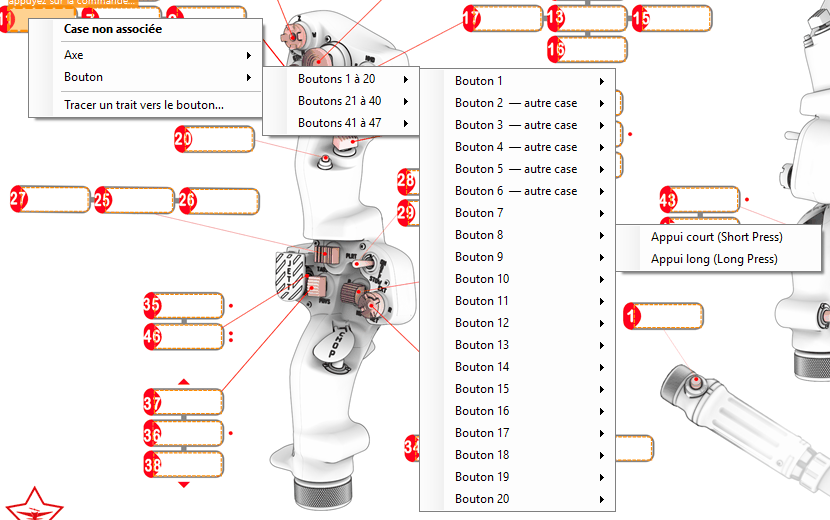
Étape 5 — Ajuster et terminer
- Placer ▾ → Modifier les zones : glisser une case la déplace, son coin bas droit (carré bleu) la redimensionne, Suppr l'efface ; glisser le point rouge d'un trait le déplace. Un clic dans une case vide de l'image la délimite automatiquement ; un rectangle tracé à la souris crée une case sur une image sans cases.
- Échap ou Placer ▾ → Terminer le placement pour revenir à la consultation.
- Pensez à exporter l'agencement pour le sauvegarder.

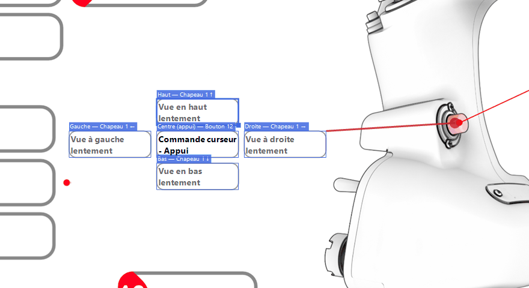
Les numéros imprimés sur les images de Virpil ne correspondent pas toujours aux boutons que votre périphérique envoie (inverseurs montés dans l'autre sens, encodeurs, profil VPC modifié). L'appui sur la commande donne toujours la bonne association, pour votre matériel et votre profil.
Les différentes visualisations
Une fois les cases associées, les commandes du module choisi s'affichent de plusieurs façons.
- Tableau : toutes les commandes du périphérique, une ligne par entrée et par modificateur, avec la colonne VPC et l'origine (modifiée, défaut, conflit). Voir la première capture.
- Image en consultation : le texte des commandes dans les cases, la commande sans shift ni modificateur en premier et en gras. Quand vous appuyez sur un bouton, sa case s'allume en orange (et l'image de son périphérique s'affiche si « Tous les périphériques » est choisi). Le texte s'adapte à la case ; s'il y a trop de commandes, la dernière ligne se termine par « (+N) ». Agrandir la fenêtre agrandit l'image et le texte.

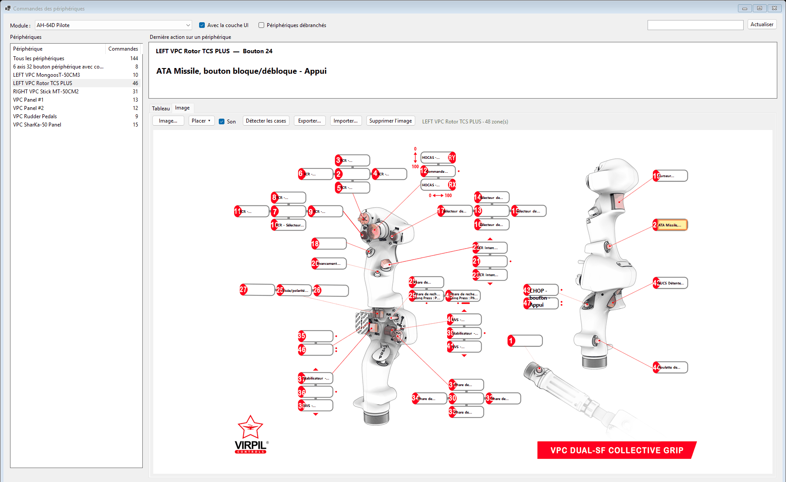
- Survol d'une case : une info-bulle donne la liste complète de ses commandes.
- Clic sur une case : son détail s'affiche dans le panneau Dernière action, avec les boutons logiques du bouton physique (par exemple l'appui long que VPC lui associe).

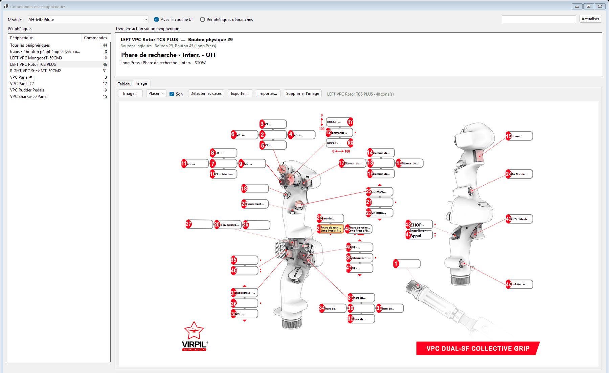
- Cases de gabarit : elles ont leur propre cadre (utile sur une partie vide de l'image), leur trait éventuel vers le bouton de la photo, et, pour un bouton avec shift, une ligne par couche dans la couleur de la couche.

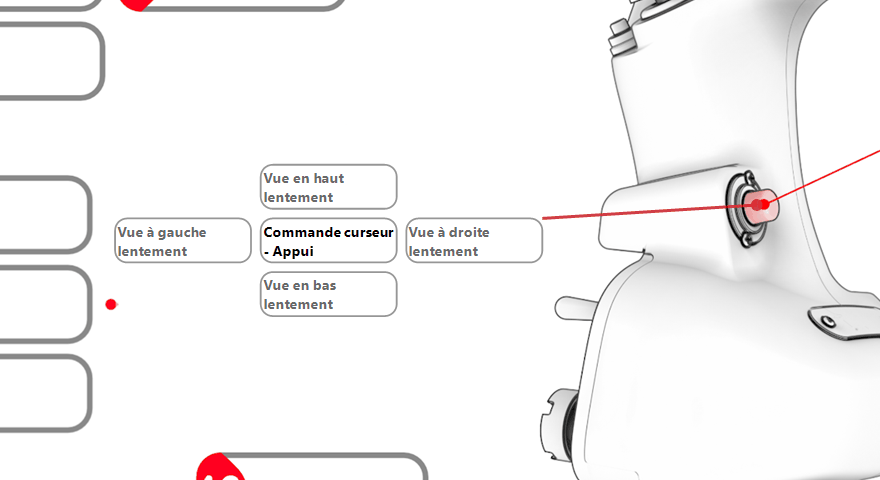

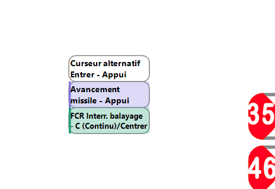
- Kneeboard : la même image sur une page de la kneeboard de DCS (voir Export vers la kneeboard).
Sauvegarder ou partager un agencement
Exporter… enregistre l'image et ses zones dans un fichier .vpszones : une sauvegarde
de votre travail, à reprendre sur un autre PC, ou à partager avec un autre utilisateur du même périphérique.
Importer… charge un tel fichier pour le périphérique affiché (l'image et les zones actuelles sont
remplacées, après confirmation ; un avertissement s'affiche si le fichier a été fait pour un autre modèle).
Les zones d'un périphérique Virpil sont associées aux boutons physiques : chez quelqu'un d'autre, elles restent justes tant que son périphérique envoie les mêmes boutons (même modèle, profil VPC comparable). Sinon, il suffit de refaire l'association des cases concernées. L'image reste celle de son auteur : ne partagez que des images que vous avez le droit de diffuser.
Export vers la kneeboard
Le bouton Exporter vers la kneeboard… prépare, pour le module choisi, des pages que DCS affiche dans la kneeboard de l'appareil.
- Le dossier proposé est
Saved Games\DCS\Kneeboard\<type d'appareil>, le type étant lu dans le module (par exempleC-130J-30pour le C-130J,AH-64D_BLK_IIpour le pilote comme pour le copilote de l'Apache). Un module à plusieurs variantes propose un dossier par variante. - Cochez les périphériques à inclure et vérifiez les pages dans l'aperçu.
- Cliquez Exporter. DCS lit les pages au lancement de la mission.
- Périphérique avec une image : une page portrait avec l'image en haut et les commandes dans ses cases. Une case trop petite pour son texte reçoit un renvoi (« → 3 », en bleu) et le texte complet figure dans la rubrique Renvois sous l'image. Suivent les commandes qu'aucune case ne montre (axes, chapeaux…).
- Périphériques sans image : des pages texte sur deux colonnes, un paragraphe par périphérique. Ce qui ne tient pas sous une image passe aussi sur ces pages.
- Les fichiers s'appellent
VPS-Commandes 01 - <périphérique>.png… Un nouvel export remplace ces fichiers-là et ne touche jamais à vos autres pages de kneeboard.

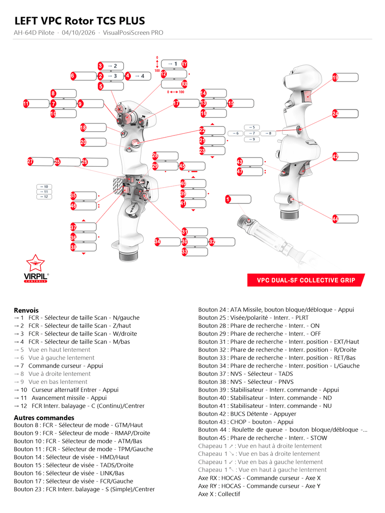